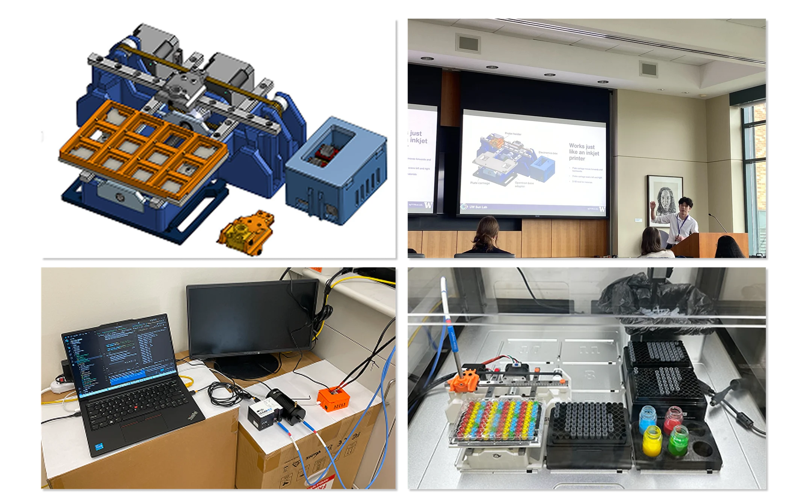
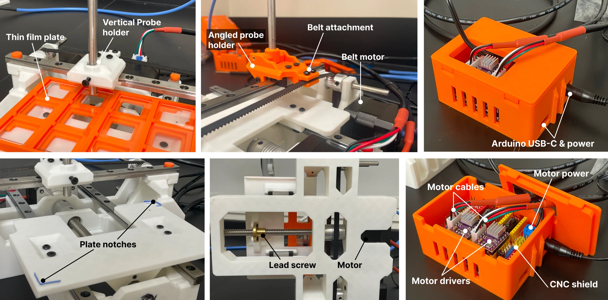

Laboratory Automation
Undergraduate Researcher · University of Washington · Oct 2023 ~ Aug 2025
Skills
Overview
Self-driving labs could speed up the discovery of new solar cell materials, but streamlining laboratory setups is difficult: many systems aren’t modular and are costly to customize for each lab.
To help close that gap, I designed Kamome, a modular, ~$160 two-axis gantry that carries a spectrometer over sample plates inside an Opentrons OT-2 liquid-handling robot. It runs off an Arduino and 2 NEMA 17 stepper motors, which drive a leadscrew for the Y axis and timing belts with adjustable tension for the X axis.

I initially considered a rack and pinion for both axes because of its faster scanning speed, but realized backlash would be a major issue for measurement repeatability. I also added a homing feature that uses hard stops and current feedback, though the tensioned belts alone were enough to hold 0.2 mm precision for most overnight autonomous cycles. Kamome pairs with the robot through a central computer via serial commands and can run automatically after a substrate is made, letting us run a full pipette → mix → inspect cycle up to 8x faster than by hand.
I also helped build a proof-of-concept Bayesian optimization loop that can approximate any given color using CMYK dyes. It randomly explores combinations in batches of 8 colors, inspects them with Kamome, then exploits the difference between their intensity peaks and the target color across 12 cycles, eventually landing pretty close to the ideal result. In the future, we hope to apply the same principle to perovskite materials.
Open source at DOI: 10.5206/joh.v9i1.23044 · github.com/camsunlab/Kamome